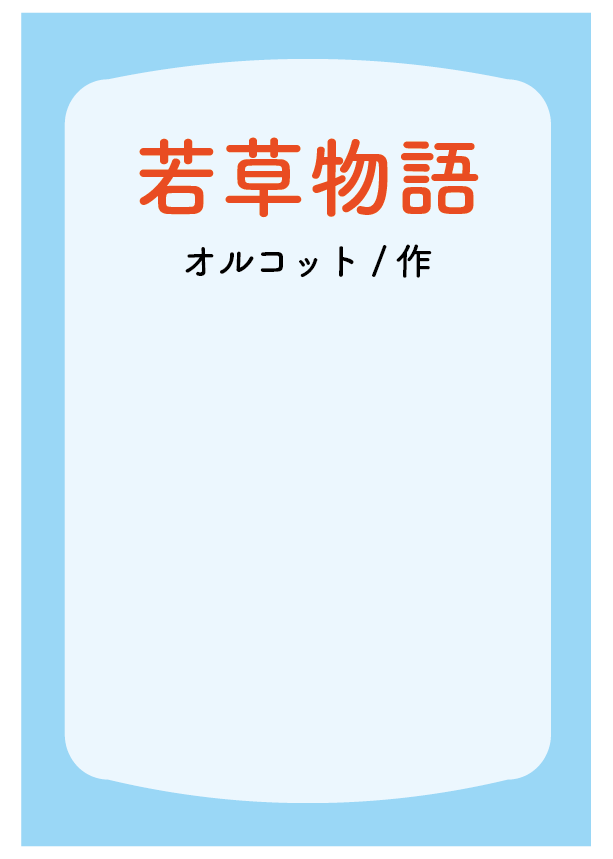

人生で初めて夢中になった長編小説です。
四姉妹の日常と、それぞれの成長が丁寧に描かれています。
登場人物たちはみな個性豊かで、生き生きとしたやり取りに惹き込まれながら、物語の世界に没頭していました。
主人公のジョーは、活発で男勝りな性格をした少女です。
自分とは異なる性格を持つ彼女の考え方や心情は、当時の私にとってとても新鮮で興味深いものでした。
この作品を通して、まるで自分が別の誰かの人生を生きているかのような体験ができたと思います。
著者：ルイーザ・メイ・オルコット
訳：中山 知子 絵：藤田 香織
出版社：講談社 出版年：2018年

人生で初めて夢中になった長編小説です。
四姉妹の日常と、それぞれの成長が丁寧に描かれています。
登場人物たちはみな個性豊かで、生き生きとしたやり取りに惹き込まれながら、物語の世界に没頭していました。
主人公のジョーは、活発で男勝りな性格をした少女です。
自分とは異なる性格を持つ彼女の考え方や心情は、当時の私にとってとても新鮮で興味深いものでした。
この作品を通して、まるで自分が別の誰かの人生を生きているかのような体験ができたと思います。